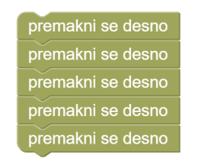

Slastna zrna
Pišek se je veselo potikal po vrtu, ko je zadel ob zrno pšenice. Izgledalo je nadvse slastno, vendar se je odločil, da ga prihrani za kasneje. Pomagaj pišku prinesti zrno v gnezdo.
Na voljo imaš kocko 'ponavljaj', s katerim večkrat ponoviš isto navodilo. Lahko petkrat uporabiš isto kocko tako:
Vendar gre tudi s kocko 'ponavljaj 5-krat tako:

Pišek se je po uspehu odločil, da natančneje preišče vrt. Našel je še eno zrno. Tudi to si bo shranil v gnezdo. Za rešitev naloge uporabi kocko ‘ponavljaj’.
Pišek na robu vrta opazi prijatelja konja Tobija. Tobi z smrčkom dreza v silos ovsenih zrn in jih je verjetno raztrosil po vrtu. In res; Pišek zraven Tobija odkrije še eno seme! Pomagaj Pišku shraniti tudi to zrno. Za rešitev naloge uporabi kocko ‘ponavljaj’.
Namesto, da petkrat napišeš isto navodilo:
desno()
desno()
desno()
desno()
desno()
uporabi zanko:
for loop in range(5):
desno()